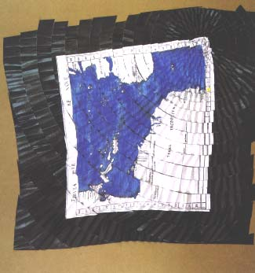

|
In my previous series of work based on Latin American maps made by colonizers, I appropriated the role of the cartographer by emulating the rational logic of map-making. The intention was to reconfigure the space of the map and convert it into a dysfunctional model of displacements and contingencies, thus creating a hybrid aesthetic condition. This metaphor of appropriation of the oppressor’s instruments converted into aesthetic material is based on the logic of the instruction of a model and its alteration.
In a similar way, I have come upon a new series of works based on trees and plants from Latin America. Motivated by the possibility of presenting images of plants as metaphors of the process of symbolic displacement, I have become interested in biological illustrations since it implies an " objective" view, the perspective of the colonizer. This displacement establishes an iconographical conflict in which science ceases to be science —in the Western sense-, in order to become an object of local beliefs. The iconological connotations of the image of the tree and plant refer to the geographical location of the same, the history of its use, of its representation in local culture and its ritual value as and object of worship. Also the tree, as a territorial model, offers the possibility of a new cartography, and its form as a metaphor of life allows me to narrate colonial history of a region. The natural order in which towns, cities and people vanish, some are cut, while others are inserted, create an unexpected growth.
Aesthetically, I focus on inserting the image of the biological illustration within the language of pictorial symbolism. Upon observing the naturalist and symbolist tradition in the history of Western painting, I am interested in the possibility of articulating another type of symbolism linked to the vernacular. The emblematic structure of compositions is based on the desire to orchestrate, with simple visual means, the sense of a new type of cosmogony, one that includes linguistic, territorial and social history of colonization. The outcome is a geographical and historical record that is symbolically narrated from the point of view of the colonized. |

|